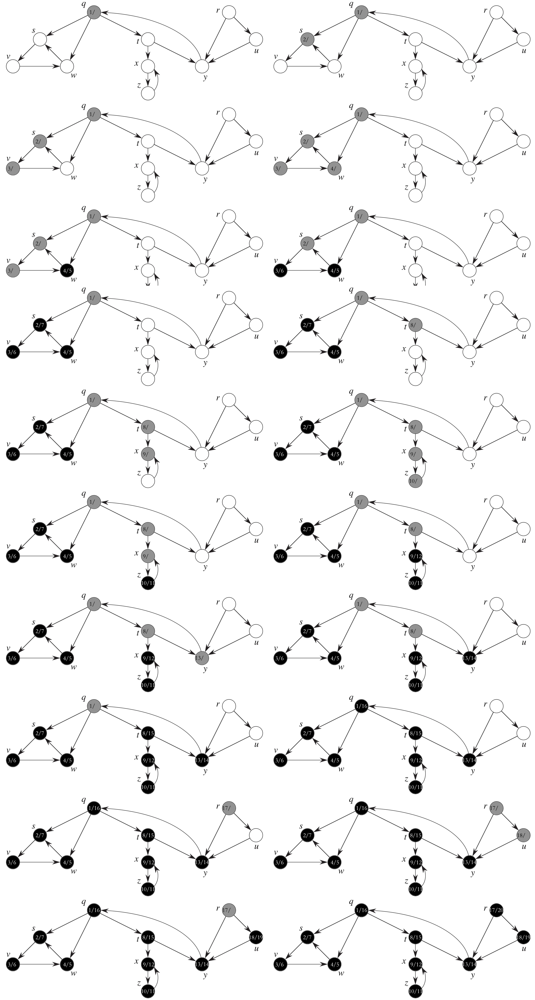
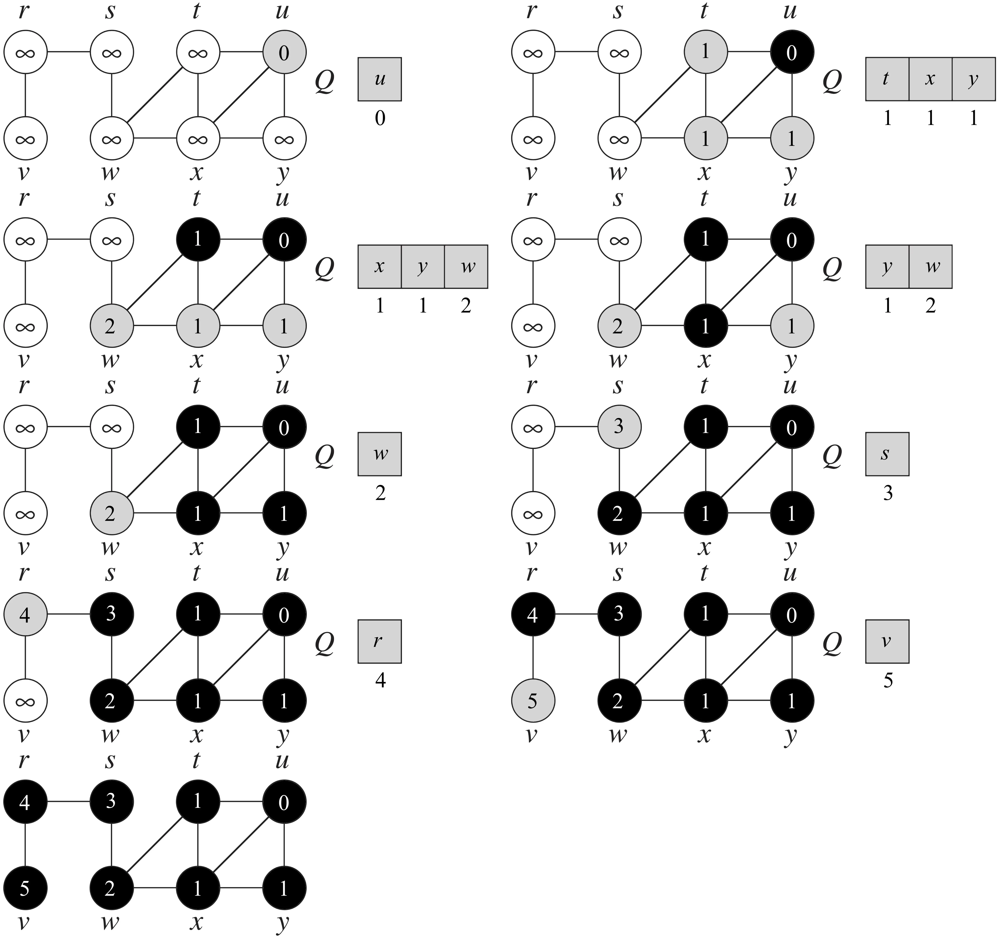

We can choose between two standard ways to represent a graph $G=(V,E)$ as a collection of adjacency lists or as an adjacency matrix. Either way applies to both directed and undirected graphs.
The adjacency-list representation of a graph $G=(V,E)$ consists of an array $Adj$ of $|V|$ lists, one for each vertex in $V$. For each $u\in V$, the adjacency list $Adj[u]$ contains all the vertices $v$ such that there is an edge $(u,v)\in E$. That is, $Adj[u]$ consists of all vertices adjacent to $u$ in $G$. Fun fact is that if $G$ is a directed graph, the sum of the lengths of all the adjacency lists is $|E|$. If $G$ is an undirected graph, the sum of the lengths of all the adjacency lists is $2|E|$. In practice, an adjacency list can be represented using an array of arrays. The following code shows the idea.
| import Foundation | |
| public struct AdjacencyEdge : Equatable { | |
| public var v : Int | |
| public var weight : Int | |
| } | |
| public struct AdjacencyList { | |
| /* Number of vertices in this graph */ | |
| public var count : Int | |
| var adj : [[AdjacencyEdge]] | |
| public init(count : Int) { | |
| self.count = count | |
| adj = [[AdjacencyEdge]]( | |
| repeating: [AdjacencyEdge](), | |
| count: count | |
| ) | |
| } | |
| public func get_adj_list(u : Int) -> [AdjacencyEdge] { | |
| return adj[u] | |
| } | |
| public mutating func insert_edge(u : Int, v : Int, weight : Int = 1) { | |
| adj[u].append(AdjacencyEdge(v: v, weight: weight)) | |
| } | |
| /* O(n) time */ | |
| public mutating func contains(u : Int, v : Int) -> Bool { | |
| for e in adj[u] { | |
| if e.v == v { | |
| return true | |
| } | |
| } | |
| return false | |
| } | |
| } |
For the adjacency-matrix representation of a graph $G=(V,E)$, we assume that the vertices are numbered $0,1,...,|V|$. Then the adjacency-matrix representation of a graph $G$ consists of a $|V|\times|V|$ matrix $A=(a_{ij})$ such that $$a_{ij}=\begin{cases}w_{ij}&\text{if }(i,j)\in E,\\0&\text{otherwise}.\end{cases}$$
In real-world applications, an adjacency matrix can be represented using a two-dimensional array, as demonstrated in the following code.
| public struct AdjacencyMatrix { | |
| /* Number of vertices in this graph */ | |
| public var count : Int | |
| var matrix : [[Int]] | |
| public init(count : Int) { | |
| self.count = count | |
| matrix = [[Int]]( | |
| repeating: [Int](repeating: 0, count: count), | |
| count: count | |
| ) | |
| } | |
| public mutating func insert_edge(u : Int, v : Int, weight : Int = 1) { | |
| matrix[u][v] = weight | |
| } | |
| public func contains(u : Int, v : Int) -> Bool { | |
| return matrix[u][v] != 0 | |
| } | |
| public mutating func remove_edge(u : Int, v : Int) { | |
| matrix[u][v] = 0 | |
| } | |
| public func get_edge(u : Int, v : Int) -> Int { | |
| return matrix[u][v] | |
| } | |
| } |
Depth-first search (DFS) is an algorithm for searching the vertices of a graph, that works by exploring as far into the graph as possible before backtracking.
It is useful to define the following "colors" for vertices in order to keep track of the state of the algorithm:
We also find it useful to maintain a timeline of the search. We keep track of a time at each step, and the following events:
d[u]: the time at which we discover vertex u, i.e., the time it becomes gray.f[u]: the time at which we finish exploring all edges out of vertex u, i.e., the time it becomes black.The following Swift code is the basic depth-first-search algorithm. The input graph $G$ may be undirected or directed. The variable $time$ is a global variable that we use for time stamping.
| import Foundation | |
| import Collections | |
| @usableFromInline | |
| enum DFSColor { | |
| case white | |
| case gray /* It is discovered in the search. */ | |
| case black /* It is finished */ | |
| } | |
| @usableFromInline | |
| var time : Int = 0 | |
| @inlinable | |
| public func dfs(G : AdjacencyList) { | |
| var color = [DFSColor](repeating: .white, count: G.count) | |
| /* Predecessor */ | |
| var π = [Int](repeating: -1, count: G.count) | |
| /* Timestamps */ | |
| var d = [Int](repeating: 0, count: G.count) | |
| var f = [Int](repeating: 0, count: G.count) | |
| time = 0 | |
| for u in 0 ..< G.count { | |
| if color[u] == .white { | |
| dfs_visit(G, &π, &color, &d, &f, u) | |
| } | |
| } | |
| } | |
| @usableFromInline | |
| func dfs_visit( | |
| _ G : AdjacencyList, | |
| _ π : inout [Int], | |
| _ color : inout [DFSColor], | |
| _ d : inout [Int], | |
| _ f : inout [Int], | |
| _ u : Int | |
| ) { | |
| time += 1 | |
| d[u] = time | |
| color[u] = .gray | |
| for e in G.adj[u] { | |
| let v = e.v | |
| if color[v] == .white { | |
| π[v] = u | |
| dfs_visit(G, &π, &color, &d, &f, v) | |
| } | |
| } | |
| color[u] = .black | |
| time += 1 | |
| f[u] = time | |
| } |
Another interesting property of depth-first search is that the search can be used to classify the edges of the input graph $G=(V,E)$. Knowing the type of each edge can be very useful; for example, we can determine whether a directed graph is acyclic by checking if a depth-first search yields any "back" edges.
Formally, we define the types of edges as follows:
dfs_visit routine.Here is a modified version of the pseudocode for depth-first search so that it prints out every edge in the graph $G$, together with its type.
| DFS-VISIT-PRINT(G, u) | |
| time = time + 1 | |
| u.d = time | |
| u.color = GRAY | |
| for each vertex v ∈ G.Adj[u] | |
| if v.color == WHITE | |
| print "(u, v) is a tree edge." | |
| v.π = u | |
| DFS-VISIT-PRINT(G, v) | |
| else if v.color == GRAY | |
| print "(u, v) is a back edge." | |
| else if v.d > u.d | |
| print "(u, v) is a forward edge." | |
| else | |
| print "(u, v) is a cross edge." | |
| u.color = BLACK | |
| time = time + 1 | |
| u.f = time |
Related problem: LeetCode 207. Course Schedule.
The example demonstrates how depth-first search works on the following graph. Assume that the DFS procedure considers the vertices in alphabetical order, and assume that each adjacency list is ordered alphabetically.
Given a graph $G=(V,E)$ and a distinguished source vertex $s$, breadth-first search (BFS) systematically explores the edges of $G$ to "discover" every vertex that is reachable from $s$. It is so named because it expands the frontier between discovered and undiscovered vertices uniformly across the breadth of the frontier.
The code that follows illustrates the BFS algorithm.
| @usableFromInline | |
| enum BFSColor { | |
| case white | |
| case gray | |
| case black | |
| } | |
| @inlinable | |
| public func bfs(G : AdjacencyList, s : Int) -> [Int] { | |
| /* Initialization */ | |
| var color = [BFSColor](repeating: .white, count: G.count) | |
| var d = [Int](repeating: Int.max, count: G.count) | |
| var π = [Int?](repeating: nil, count: G.count) | |
| color[s] = .gray | |
| d[s] = 0 | |
| π[s] = nil | |
| var Q = Queue<Int>() | |
| Q.enqueue(s) | |
| while !Q.is_empty { | |
| let u = Q.dequeue() | |
| for e in G.adj[u] { | |
| let v = e.v | |
| if color[v] == .white { | |
| color[v] = .gray | |
| d[v] = d[u] + 1 | |
| π[v] = u | |
| Q.enqueue(v) | |
| } | |
| } | |
| color[u] = .black | |
| } | |
| return d | |
| } |
The following figure illustrates the progress of BFS on a sample graph.
